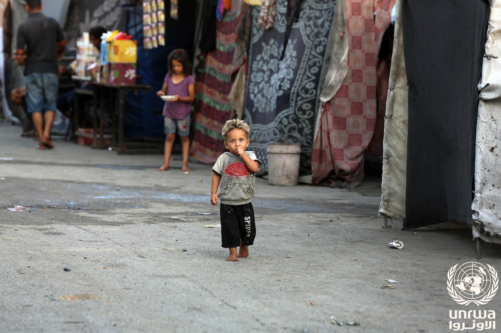

Palestinian Education Ministry: more than 800 teachers killed in Gaza since the war began
Ahead of World Teachers' Day, the ministry says more than 800 teachers and education staff have been killed since October 7, 2023, over 3,300 injured and more than 170 detained. The figures are the ministry's count; Israel disputes some tallies.

According to a statement by the Palestinian Education Ministry on October 4, more than 800 teachers and education staff have been killed in Gaza since the war began on October 7, 2023, over 3,300 injured and more than 170 detained. These figures are the ministry's count; the statement was released ahead of World Teachers' Day (October 5).
Damage to the education system
According to UNICEF, about 97% of Gaza's school buildings have been damaged or destroyed, most requiring full repair or reconstruction. An estimated 658,000 school-age children have been left without formal schooling, and the education of more than a million children has been disrupted. In September 2026, about 500,000 students (350,000 in government and 150,000 in UN agency schools) returned to class after a three-year break; 208 government schools reopened, though the need is far greater.
Israel's position
The Israeli military says it is fighting Hamas's military infrastructure and accuses Hamas of using civilian sites such as schools. Israel rejects accusations that it deliberately targets civilians and considers some of the figures cited by Gaza authorities to be disputed. The teacher and overall casualty figures above come from Gaza authorities (the Education and Health ministries).
The wider context of the war
According to the Gaza Health Ministry, the overall death toll has exceeded 74,000 since the war began. A US-brokered ceasefire has been in place since October 2025, but its later phases have not been fully implemented, and Palestinian authorities say more than a thousand people have been killed since the truce. This article presents only verified facts, with links to sources.